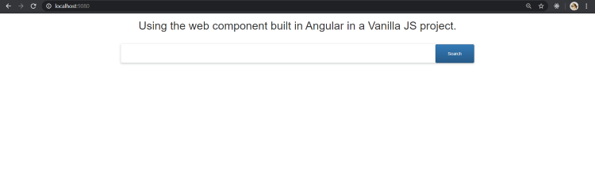

<div class="content-overview">
    <div class="inner-style">
        <h2 class="content-heading"><span class="style-scope ">7</span>. <span
                class="style-scope google-codelab-step">Building our Web Component</span></h2>
        <p>You now might be wondering that I mentioned about using these anywhere across apps created using different
            frameworks or in JavaScript. Well, officially Angular does not yet support stand-alone web components which
            can be used outside the Angular projects, however, you can still use these custom elements in other
            frameworks by a variety of ways. Let us look at that.</p>
        <p> The community project, ngx-build-plus by Manfred Steyer, allows us to create the required polyfills and the
            optional --single-bundle switch, helps create a single bundle which then exposes our web component.</p>
        <h3 style="text-align: center; color: gray;">There is an amazing series of blog posts about Angular elements in
            detail by Manfred himself here.</h3>

        <p>To add it to your web component project,
        </p>
        <pre style="background: darkgray; padding: 6px;"><code style=" color: black;">ng add ngx-build-plus</code></pre>
        <p>This will update the build target in your angular.json to ngx-build-plus:build and update scripts related to
            polyfills.
            Also, remember we manually added polyfills to our web component project? We can avoid doing that as well
            with the help of ngx-build-plus!</p>
        <p>We can do this by using the command:</p>
        <pre
            style="background: darkgray; padding: 6px;"><code style=" color: black;">ng g ngx-build-plus:wc-polyfill</code></pre>

        <p>Now, to use the single-bundle flag, we would update our scripts in the package.json for building the web
            component.</p>
        <pre
            style="background: darkgray; padding: 6px;"><code style=" color: black;">"build-my-comp": "ng build --prod --single-bundle true --keep-polyfills"</code></pre>

        <p>The single-bundle flag defaults to false so we set it to true explicitly in the build script. When you try to
            build your component now using npm run</p>
        <pre style="background: darkgray; padding: 6px;"><code style=" color: black;">build-my-comp</code></pre>
        <p>, you might get to
            see another error saying:
        </p>
        <h3 style="text-align: center; color: gray;">Schema validation failed with the following errors: Data path
            ".budgets[1].type" should be equal to one of the allowed values.
        </h3>
        <p>To solve this, remove the following lines of code from angular.json</p>
        <pre style="background: darkgray; padding: 6px;"><code style=" color: black;">{{'{'}}
    "type": "anyComponentStyle",
    "maximumWarning": "6kb",
    "maximumError": "10kb"
{{'}'}}
</code></pre>
        <p>Finally, you will get a main bundle created now that can be exported to a Vanilla JS project, or any other
            framework and can be used as a web component, with, ofcourse, polyfills in place.
            To test this, in a basic project inside index.html, I included the file as:</p>

        <pre
            style="background: darkgray; padding: 6px;"><code style=" color: black;">&lt;script src="main.js"&gt;&lt;/script&gt; </code></pre>
        <p>and used the custom element
        </p>
        <h3 style="text-align: center; color: gray;"> &lt;custom-element&gt;&lt;custom-element&gt; </h3>
        <p>To run this to be able to see the output now, you can install static-server from npm </p>
        <pre
            style="background: darkgray; padding: 6px;"><code style=" color: black;">npm i -g static-server</code></pre>
        <p> Open the app on the port specified, and there
            you go with own web component in a non-Angular project (where the web component was created.)</p>
        <div style="text-align: center; padding-top: 12px;"></div>
        <p>The web component can now be published to npm and used in other frameworks as well.</p>


    </div>
</div>